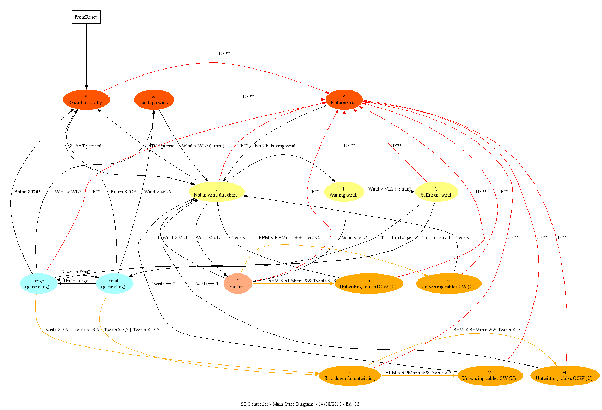

Le contrôleur dans une éolienne réelle est l'ensemble des composants électroniques et électriques qui contrôlent le comportement des différents sous-systèmes de l'éolienne, y compris principalement les sous-systèmes de la nacelle ainsi que les éléments du panneau électrique, de sorte que le comportement global de l'éolienne répond au comportement prévu de produire le maximum d'énergie du vent pendant la majeure partie du temps.
Pour cela le contrôleur (parfois implémenté sur un automate programmable, ou utilisant un PC industriel) dispose d'algorithmes embarqués pour piloter chaque sous-système (hydraulique, mécanique, électrique, de sécurité) et les orchestrer pour atteindre sa cible.
Un diagramme d'état simplifié du comportement du contrôleur dans ce simulateur est montré dans la figure suivante.
